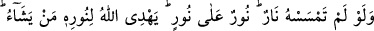

ALLAH,
GÖKLERİN VE YERİN
NÛRUDUR
35. Allah, göklerin ve yerin nûrudur. O’nun nûrunun temsili, içinde lamba bulunan
bir kandillik gibidir. O lamba kristal bir fanus içindedir; o fanus da sanki inciye
benzer bir yıldız gibidir ki, doğuya da, batıya da nisbet edilemeyen mübarek bir
ağaçtan, yâni zeytinden (çıkan yağdan) tutuşturulur. Onun yağı, neredeyse,
kendisine ateş değmese dahi ışık verir. (Bu,) nûr üstüne nûrdur. Allah dilediği
kimseyi nûruna eriştirir. Allah insanlara (işte böyle) temsiller getirir. Allah her şeyi
bilir.
“Allah, göklerin ve yerin nûrudur.” İmam Gazzâlî “en-Nûr” isminin şerhinde şöyle
der: O, her zuhûrun kendisiyle olduğu zâhir olandır. Çünkü kendisi zâhir olup başkasını
ızhâr eden şey “nûr” diye isimlendirilir. Varlık ile yokluk karşılaştırıldığında zuhûr
kaçınılmaz olarak varlığa âiddir. Yokluktan da daha karanlık bir şey yoktur. Dolayısıyla
yokluk karanlığından, hatta bütün eşyâyı adem karanlığından ve varlık zuhûruna çıkaran,
ademin mümkün olmasından uzak olan “nûr” diye isimlendirilmeye lâyıktır. Varlık,
bütün eşyâ üzerine Allah Teâlâ’nın zâtının nûrundan feyezân etmiş bir nûrdur. İşte O
göklerin ve yerin nûrudur. Güneşin ışığının her bir zerresi, ışık saçan güneşin varlığına
delâlet ettiği gibi göklerin, yerin ve ikisi arasındaki varlıkların her bir zerresi de
muhakkak kendilerini var eden birinin var olduğuna delâlet eder.”
Necmeddîn de Te’vîlât’ında ona muvâfakat ederek şöyle der: “Allah, göklerin ve
yerin nûrudur” yâni onları yokluktan varlık âlemine çıkarıp ızhâr edendir. Çünkü nûrun
sözlük mânâsı ışıktır. Işık ise eşyâyı aydınlatarak gözlerin onu görmesini sağlayan
şeydir.”
“Allah, göklerin ve yerin nûrudur.” âyeti teşbîh-i belîğ kabilindendir. Yâni Allah,
gökleri ve yeri yaratıp ortaya çıkaran oluşu sebebiyle bu ikisine nisbetle nûr gibidir.
Ortaya çıkışın (zuhûrun) aslı, yokluktan varlık sahasına çıkmaktır. Çünkü Allah’ın